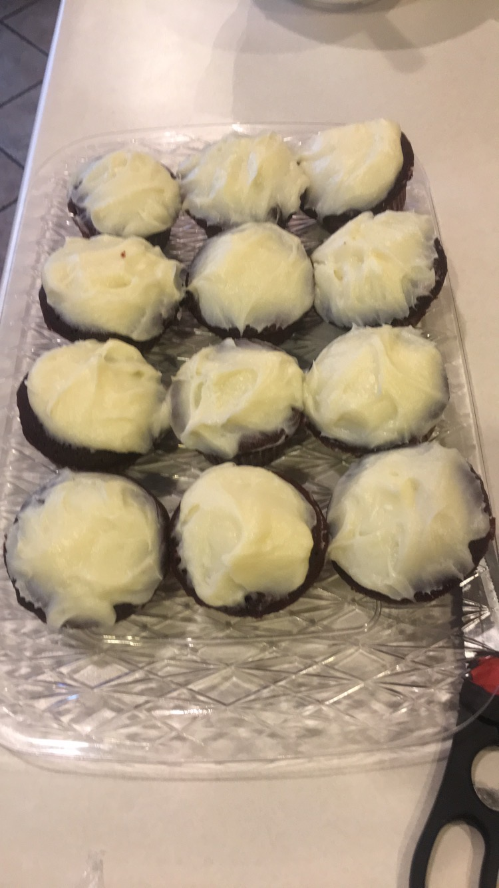
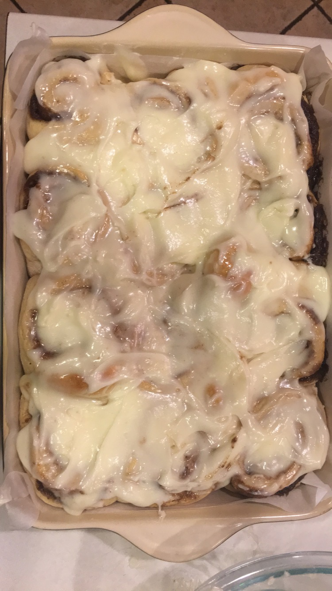
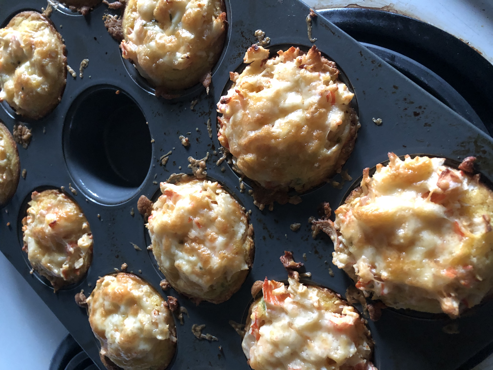

Welcome to My Life
A Sweet Surprise!
Welcome brave soul! Your courage has been rewarded with a fun fact about me! In my free time, and/or when I'm stressed out, I like to bake. I mainly make desserts, but there have been a few attempts at some savory snacks. It started out as a few batches of brownies here and there, but eventually morphed into a full fledged hobby. I've made everything from cakes and pies to bagels and synonym rolls (Before you ask, no, that's not a typo. That's what I can them...). One day, I hope to have a recipe book full of self-made recipes, and be able to pass it down through my family.
  